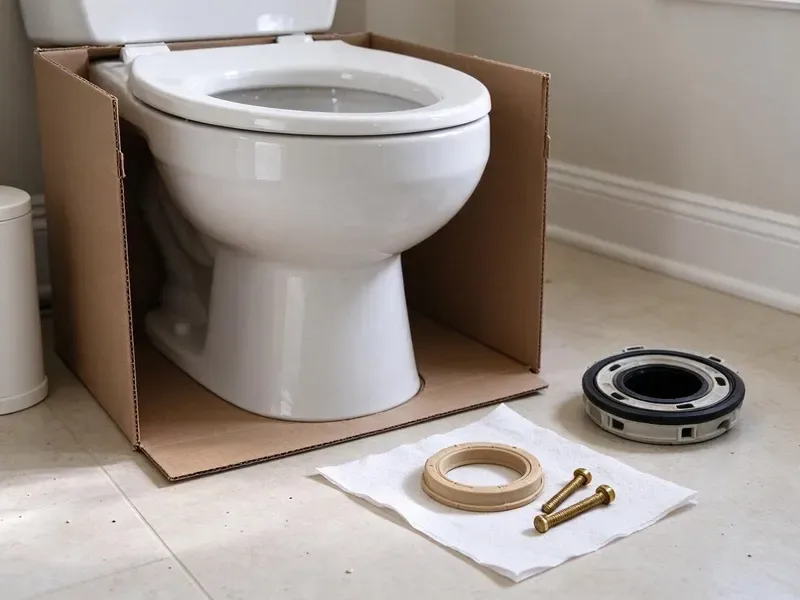
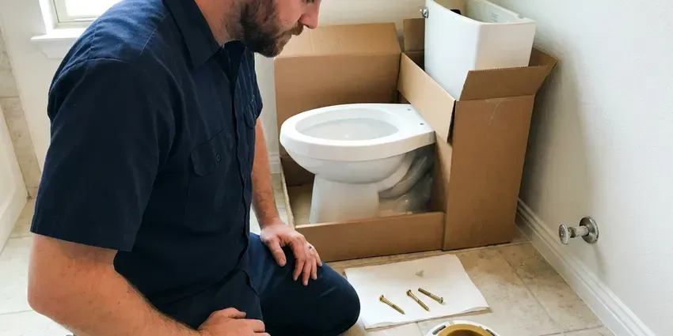
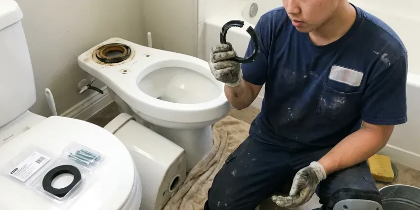
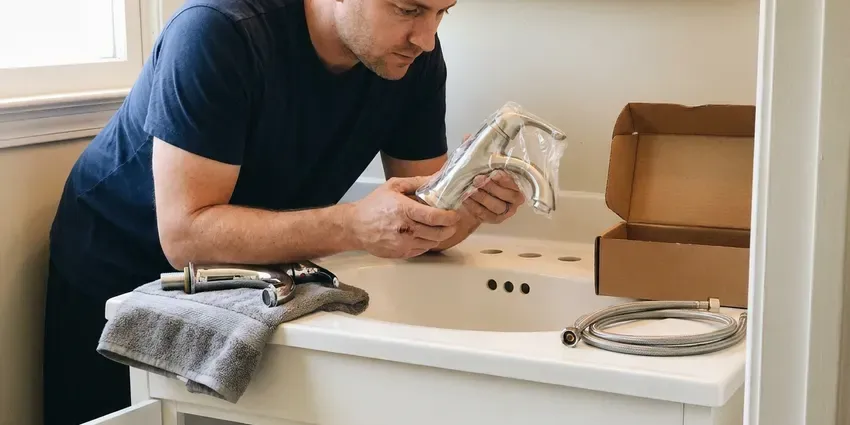
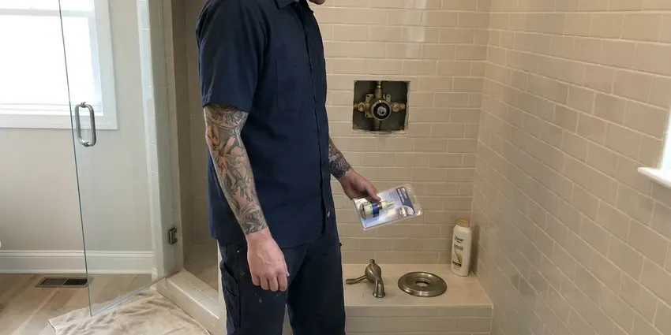
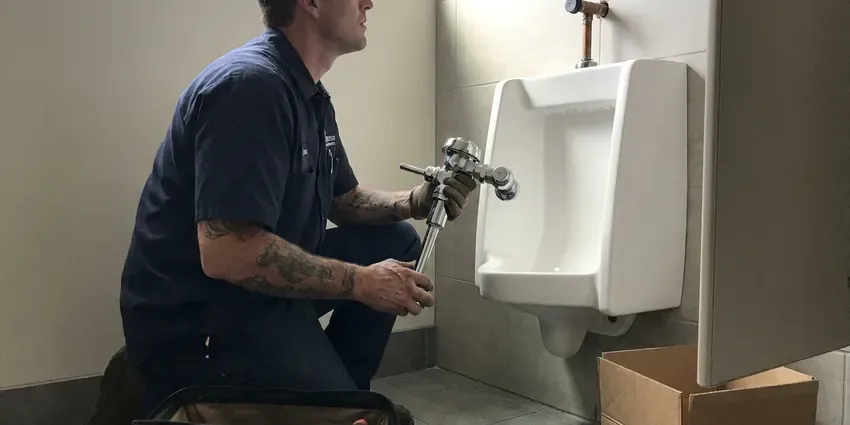

Bathtub Faucet Replacement in Apple Valley, MN
We open walls from behind when we can on tub valve jobs in Apple Valley, MN.
- Same-Day Visits Most Days
- Moen, Delta and Kohler Parts
- Flat Up-Front Price
- Three-Handle Upgrades
Dripping Tub Spout in Apple Valley, MN? We Fix It.
Call (612) 712-9569 and tell us what the faucet is doing. A photo of the handle helps.
Tub Spouts, Cartridges and Valves in Apple Valley, MN
CNV Plumbing traces most tub faucet trouble to worn cartridges and seats. Scale buildup shortens water heater life and clogs showerheads, which is why water softeners are so common in the state. A drip that will not quit, a handle that turns stiffly or a shower that swings hot and cold all point to a valve that needs a new cartridge or a full replacement. We test it before deciding.
Work we handle every week:
- Replace worn tub cartridges and compression stems
- Install access panels behind the tub
- Install freestanding and deck-mount tub fillers

Additional Bathroom Plumbing Services in Apple Valley, MN
From toilets to showers, our bathroom plumbing team in Apple Valley, MN repairs, installs, and replaces every fixture with clean, code-compliant work.


Toilet Installation in Apple Valley

Apple Valley toilet bowl replacement specialists

Apple Valley faucet installation specialists

Apple Valley shower repair specialists

Customers
Why Choose CNV Plumbing for Bathtub Faucet Replacement in Apple Valley, MN?
New faucets should match the room. We install trim from Moen, Delta, Kohler and American Standard in chrome, brushed nickel, matte black and bronze, and many valve bodies accept new trim later without opening the wall again. Style changes get easier.
- Local Expertise, We know Apple Valley plumbing codes and what local water does to tub valves.
- Right Parts, We identify the exact valve so the part fits on the first try.
- Skilled Technicians, Licensed plumbers who solder, press and crimp inside finished walls.
Citywide Coverage
New construction and recent remodels are covered too. Newer valves often accept trim and cartridge swaps from the front, with no tile work. Those jobs go quickly.
Experienced Team
Every valve swap has a licensed plumber on it. Soldering, pressing or crimping inside a finished wall and pressure-testing before it closes is licensed work, and our helpers carry and clean while the plumber does the connections. We hold to that rule.
Safety-First Approach
Lead-free parts only. Every valve and spout we install is rated lead-free for drinking water under federal rules, which has been the standard since 2014. Older brass usually falls short.
Trusted Certified Apple Valley Plumbing Services Professionals
At CNV Plumbing, we are proud to offer certified plumbing services throughout Apple Valley, MN. Credentials matter in this trade. Our plumbers hold recognized industry credentials, and they follow strict safety and quality rules on every repair, installation and maintenance call we run.
Call Us Now PHCC Plumbing Contractor Recognition
PHCC Plumbing Contractor Recognition Better Business Bureau (BBB) Accreditation
Better Business Bureau (BBB) Accreditation Angi Certified Pro
Angi Certified Pro ISO 9001 Quality Management Certification
ISO 9001 Quality Management CertificationFrom Spouts to In-Wall Valves in Apple Valley, MN
Same-Day Tub Faucet Replacement in Apple Valley, MN
Some faucet failures cannot wait. Snapped handles and broken spouts get same-day visits when a plumber is free. Shut off the water first. Leave the tub drain open.

Tub Faucet Style Upgrades in Apple Valley
Wall-mount tub fillers are a popular upgrade. A long-reach filler or a slide-bar handheld changes the tub, and both usually need a new valve or diverter. We plan the rough-in first. The trim goes on last.
Hard Water Tub Faucet Replacement in Apple Valley
Scale buildup shortens water heater life and clogs aerators, which is why water softeners are so common in the state. Scale packs into cartridges and spout diverters until handles stiffen and the diverter will not lift. Soaking and cleaning buys time on a lightly scaled valve, but once the brass is pitted or the cartridge has fused to the body, replacing the faucet is the only fix that lasts. We pull a cartridge to check.
Standard Bathtub Faucet Replacement in Apple Valley
Single-handle and three-handle tub faucets come out differently. Single-handle valves can often be updated from the front, while three-handle valves usually get cut out and replaced. The valve gets identified before we price it. Two-handle models fall in between.
Tub Valves in Older Houses in Apple Valley, MN
Cast iron tubs and plaster walls change the plan. We open plaster slowly or from a closet behind it, and the cast iron tub stays in place. Patching plaster is slow. Access panels avoid it.
Moen Tub Faucet Replacement in Apple Valley
Moen Posi-Temp valves use the 1222 cartridge. A worn 1222 causes drips or weak hot water, and replacing it takes about an hour with a puller. Moentrol valves use a different part. We carry both.
Three-Handle to Single-Handle Conversion in Apple Valley
Three-handle faucets are worth converting. The old valve comes out, a pressure-balance valve goes in, and a remodel plate covers the extra holes. We usually work from behind the wall. Tile around the plate stays intact.

Corroded Tub Faucet Replacement in Apple Valley, MN
Scale buildup shortens water heater life and clogs aerators, which is why water softeners are so common in the state. Corrosion shows up as green crust at the handle or a stem you cannot turn by hand. By that point the threads that hold the trim are often too weak to grip a new part, and the valve body itself may be pitted where the cartridge seals against it. Replacement is the better call.
Finding Tub Faucet Replacement Near Me in Apple Valley, MN
Being nearby matters after the job too. If a new valve weeps or a handle loosens during the warranty period, the plumber who did the work is a short drive away and can be back within a day or two. Callbacks are rare.
Searching tub faucet replacement near me usually means a drip is keeping you up at night. Trucks nearby carry common cartridges, which means same-day fixes happen often. You get a heads-up call.
CNV Plumbing at a Glance
- Fully licensed plumbing team covering Apple Valley, MN
- Same-day appointments and 24/7 emergency response
- Clear written estimates, no hidden fees
- 4.8-star rated by 501+ Minnesota customers
Apple Valley Map
Apple Valley Information
- Population
- 55,336
- Area codes
- 612/507/320
- Service area
- Apple Valley and towns within a 40 mile drive
- Nearby
- Burnsville, Eagan, Lakeville, Bloomington
Scale buildup shortens water heater life and clogs aerators, which is why water softeners are so common in the state. A tub faucet in Apple Valley, MN holds up better with the right valve, installed tight and pressure-tested before the wall closes.
Talk to a Plumber
Reach out to CNV Plumbing for honest, reliable plumbing from people who know the trade in Apple Valley, MN.
Our Specialized Plumbing Services in Apple Valley, MN
At CNV Plumbing, you get every kind of plumbing service from one company across Apple Valley, MN. We go from leak detection all the way to full system installations, for homes and commercial buildings, and we do it quickly at a fair price. Here are the core services we offer:


How a Tub Faucet Replacement Goes in Apple Valley, MN
A tub faucet job with CNV Plumbing usually takes one visit.
Send a Photo
Call (612) 712-9569 or text a photo of the handle. We bring the likely parts.
Identify the Valve
We find the brand and model and explain cartridge versus full replacement.
Replace and Verify
The fix goes in, the limit stop gets set, and we test for drips.
Frequently Asked Questions About Bathtub Faucet Replacement in Apple Valley
Plan on $200 to $600 for most jobs. Faucet type and pipe work set the price, and premium trim or thermostatic valves cost more. Labor and a standard faucet are included.
The diverter is wearing out. The spout gate or the middle stem washer has worn, so water splits between spout and head. Spout diverters are cheap to replace.
Scale buildup shortens water heater life and clogs showerheads, which is why water softeners are so common in the state. Calcium and magnesium build up on cartridge seals and inside the spout diverter. That buildup makes handles stiff, wears the rubber seals faster than normal, and eventually causes drips or a diverter that will not lift, which shortens the life of the whole valve. Regular cleaning slows it down.
Our trucks carry cartridges for the brands we see most. We stock common Moen, Delta, Kohler and Pfister cartridges plus universal stems and seats. Rare valves need ordering.
One to four hours for most jobs. Spouts and cartridges take about an hour, and full valve swaps can take a morning. We give you a time up front.
Every job, in writing. Our labor warranty covers our work, and the maker covers part defects. We return at no charge.
Yes, usually in under an hour. We check whether the spout is a slip-on with a set screw or a threaded type, match the length of the pipe sticking out of the wall, and pick a diverter spout if you have a shower above. We caulk the top and sides only.
Our labor is guaranteed in writing. Leaks or failures from our work get fixed free during the warranty period on your invoice. Manufacturers cover the faucet itself.
What People Are Saying About Our Plumbing Experts?

Marcus H.
Grease from the fryer line kept clogging the kitchen drain at my diner. CNV Plumbing hydro jetted the line after closing, showed me the buildup on camera, and set us up on a quarterly cleaning so it does not catch us on a Friday again.
Drain Cleaning · Bloomington, MN
Tyler J.
We bought a taller comfort height toilet for my dad, who just had knee surgery. The plumber pulled the old one, found the flange was cracked, and replaced it before setting the new bowl. Took about two hours.
Toilet Installation · Lakeville, MN
Sofia M.
Two new toilets went in during one visit. The tech set them on new wax rings and swapped the old supply lines. He also noticed our bathroom faucet dripping and replaced the cartridge while he was there. No mess left behind.
Toilet Installation · Eden Prairie, MN
Paul B.
Our pit pump ran nonstop even in dry weather. The plumber found the check valve was stuck open, so the same water kept cycling back into the pit. New valve, new float switch, done in an hour. It runs quiet now.
Sump Pump · Eagan, MN
Karen W.
After our third pinhole leak in copper, we stopped patching. CNV Plumbing gave us a written plan room by room and repiped the house in PEX while we stayed in it. The crew covered our floors every morning and cleaned up every night.
Repiping · Apple Valley, MN
Rachel N.
Hard water was leaving white crust on every faucet and our dishwasher was struggling. The tech tested the water, recommended a softener sized for a family of five, and installed it with a bypass valve in one afternoon. The spots on our glasses are gone.
Water Softener · Eden Prairie, MN